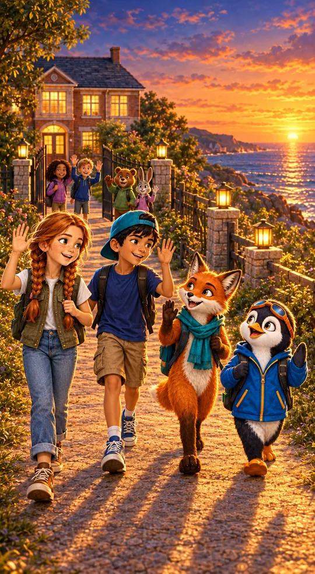

שרטוט בלבד: איפה "צפייה שוב בסרטון". במסך ההגדרות לא נוספת שורה (הפאנל של החשבון נשאר במקום ב-360×740): השורה "איך משחקים?" אומרת "ארבעת השלבים, והסרטון", והסרטון הוא הכרטיס הראשון במסך העזרה.
הגדרות (בלי שורה חדשה) · 360×740
(שם פרטי) כ.412 נקודות
איך משחקים? (הסרטון למעלה) · 360×740

(ארבעת השלבים, כמו היום)
איך משחקים? (הסרטון למעלה) · 320×568
(ארבעת השלבים, כמו היום)